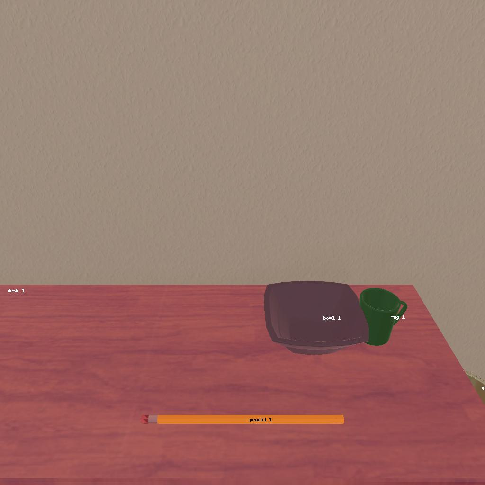

---------------------------------------------------------task: 2---------------------------------------------------------
--------------------------------------------------------------------------------------------------------------------------------------------------------------------
--------------------------------------------------------------------------------------------------------------------------------------------------------------------
Step:--------------------------------------------------------------------------5-------------------------------------------------------------------------------
----------------------------------------
VLM Prompt:
Image1:
Image2:
Image3:
**Instruction**
1. Analyze the provided image to identify all visible household objects, focusing on those relevant to the task description "examine the pen with the desklamp."
2. Use the analysis of the image and the task hint "The agent must find an object of the desired type, locate and turn on a light source with the desired object in-hand." to answer the question: what is the most reasonable action in the choices for the task description "examine the pen with the desklamp"?
4. Decide and write the answer using the template: The answer is: (i): , where i is the real number. If there is no desired object in the image, search every place based on **Initial Observation** to find the object. And if no one is exactly correct, choose a similar answer.
**Initial Observation**
You are in the middle of a room. Looking quickly around you, you can see bed (1-2), dresser (1), drawer (1-11), sidetable (1-2), desk (1), garbagecan (1), safe (1)
**Answer Choices**
(1): go to bed 1
(2): go to dresser 1
(3): go to bed 2
(4): go to sidetable 1
(5): go to drawer 2
(6): go to sidetable 2
(7): go to drawer 3
(8): go to drawer 4
(9): go to garbagecan 1
(10): go to drawer 5
(11): go to drawer 6
(12): go to drawer 7
(13): go to drawer 8
(14): go to drawer 9
(15): go to drawer 10
(16): go to drawer 11
(17): go to safe 1
(18): put pencil 1 in/on desk 1
(19): examine desk 1
**Answer**
Let's think step by step by following the instructions.
----------------------------------------
----------------------------------------
Original Response:
First, we need to identify all visible household objects relevant to the task description "examine the pen with the desklamp." In Image2, we can see a pen (pen 1) on the sidetable, and there is an alarm clock (alarmclock 1) on the same sidetable, which could potentially be the light source to use, but in this scenario, it is an alarm clock and not a desklamp. The task specifically mentions examining the pen with a "desklamp," which is not present in the image.
Based on the Initial Observation, there is no desklamp mentioned, but we have several drawers that have not been checked. The agent must find an object of the desired type, which in this case is a pen, and a light source, which is not visible in the current images nor mentioned in the Initial Observation.
Considering the provided answer choices, none of them directly state to "examine the pen with the desklamp." However, since the pen is already identified on the sidetable, the next reasonable action would be to locate a desklamp. Since the desklamp is not visible in the images and is not mentioned in the Initial Observation, the agent should search the drawers to find the desklamp.
The answer is: (5): go to drawer 2. This is the first drawer mentioned after the objects we can see in Image2, and it is a logical next step to search for the desklamp. If the desklamp is not found in drawer 2, the agent would continue to search the remaining drawers.
----------------------------------------
----------------------------------------
>>> Refine Original VLM Response and Get Pure Action: go to drawer 2
----------------------------------------
-----------------------------------------------------------------
Running time: 15.614233255386353 seconds
Total Money: 0.8783500000000002
-----------------------------------------------------------------
-----------------------------------------------------------------
Text Observation:You arrive at loc 5. The drawer 2 is closed.
-----------------------------------------------------------------
UNSUCCEED